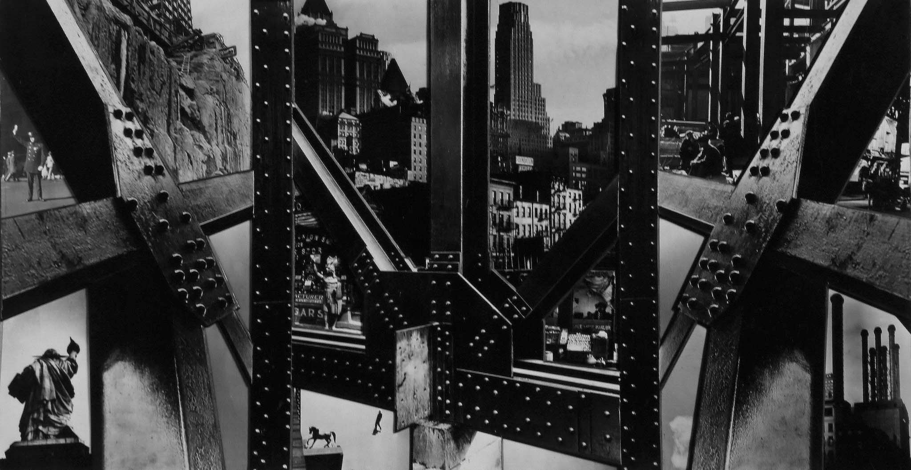
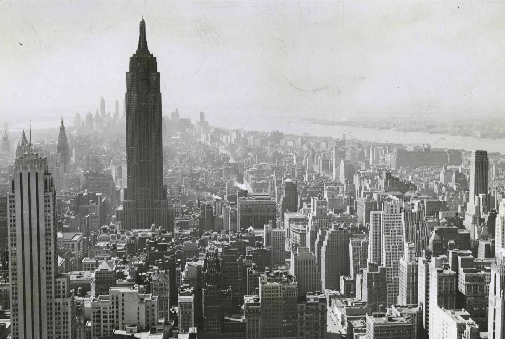
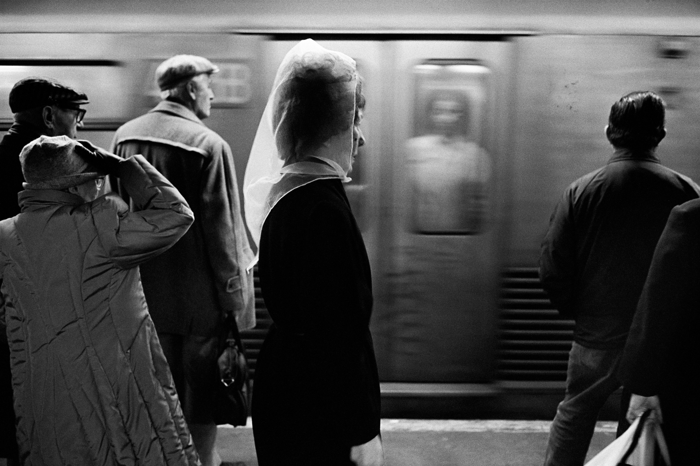
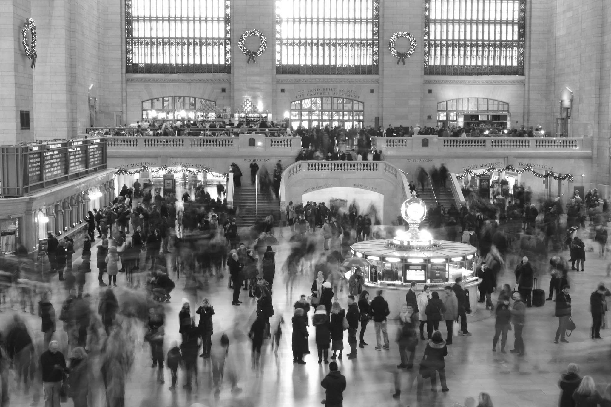

Berenice Abbott created a series of photography of the NYC streets in the early 20th century. Today when we see those photographies we see not only the former stores and blocks of buildings,but also the lifestyles in different corners of this city. Shadow provides a special perspective of storytelling in different cities in today’s world. It may interesting to see how the cities will be changed a century from now.
Early 20th C.
Mid 20th C.
Late 20th C.
Early 21st C.
Data collected by Julia Du, Designed by Michelle Kim 2021.